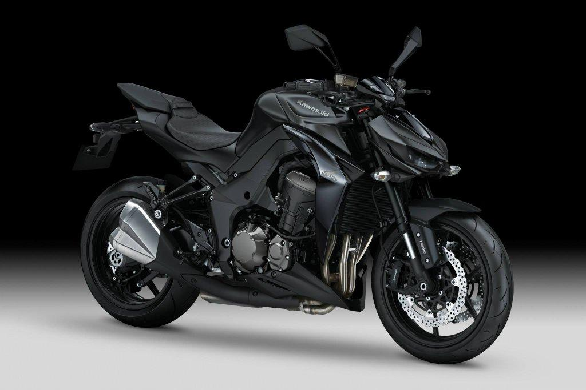

Kawasaki z1000!!
En octubre de 2009, Kawasaki presentó la Z1000 2010. Incorporaba un nuevo chasis de aluminio, panel de instrumentos digital, carrocería y motor. El diámetro y la carrera son de 77 x 56 mm, 1 mm más que los 76 x 55 mm de la ZX-10R, con una cilindrada de 1043 cc.
 ver mas...